Chapter 4 An Overview of Tools
This chapter provides an overview of the open source and free software tools that are available for patent analytics. The aim of the chapter is to serve as a quick reference guide for some of the main tools in the tool kit. We will go into some of these tools in more depth elsewhere in the WIPO Manual on Open Source Patent Analytics and leave you to explore the rest of the tools for yourself.
Before we start it is important to note that we cover only a fraction of the available tools that are out there. We have simply tried to identify some of the most accessible and useful tools. Data mining and visualization are growing rapidly to the point that it is easy to be overwhelmed by the range of choices. The good news is that there are some very high quality free and open source tools out there. The difficulty lies in identifying those that will best serve your specific needs relative to your background and the time available to acquire some programming skills. That decision will be up to you. However, to avoid frustration it will be important to recognise that the different tools take time to master. In some cases, such as R and Python, there are lots of free resources out there to help you take the first steps into programming. In making a decision about a tool to use, think carefully about the level of support that is already out there. Try to use a tool with an active and preferably large community of users. That way, when you get stuck, there will be someone out there who has run into similar issues who will be able to help. Sites such as Stack Overflow are excellent for finding solutions to problems.
This chapter is divided into 8 sections:
- General Tools
- Cleaning Tools
- Data Mining
- Data visualization
- Network visualization
- Infographics
- Geographic Mapping
- Text Mining
In some cases tools are multifunctional and so may appear in one section where they could also appear in another. Rather than repeating information we will let you figure that out.
4.1 General Tools
Quite a number of free tools are available for multi-purpose tasks such as basic cleaning of patent data and visualization. We highlight three free tools here.
4.1.1 Open Office
Many patent analysts will use Excel as a default programme including basic cleaning of smaller datasets. However, it is well worth considering Apache Open Office as a free alternative. While patent analysis will typically use the Spreadsheet (Open Office Calc) there is also a very useful Database option as an alternative to Microsoft Access.
- Download and Install Apache Open Office for your system.
- Tip: When saving spreadsheet files, choose save as .csv to avoid situations where a programme can’t read the default .odt files.
4.1.2 Google Sheets
Google Sheets require a free Google account and those who are comfortable with Excel may wonder why it is worth switching. However, Google Sheets can be shared online with others and there are a large number of free add ons that could be used to assist with cleaning data such as Split Names or Remove duplicates as shown below.
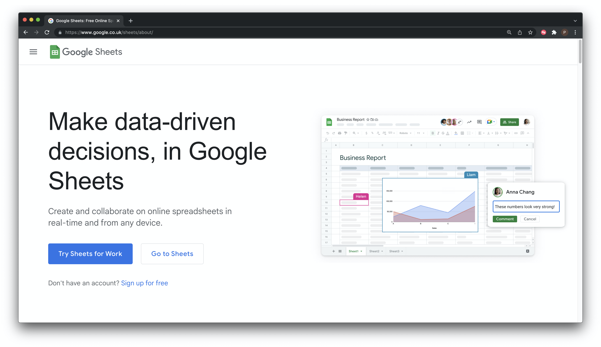
For readers with an interest in programming languages, Google Sheets can be used with the R package googlesheets and in Python using the Sheets API from Google.
Other free tools from Google that are worthy of note are Data Studio and BigQuery.
4.1.3 Data Studio
Google Data Studio (which appears to have replaced Google Fusion Tables) allows you to create dashboards and other visualisations with your data. Most of the examples focus on using Google Analytics data. However, Google Data Studio can be used to visualise any kind of data such as world population data.
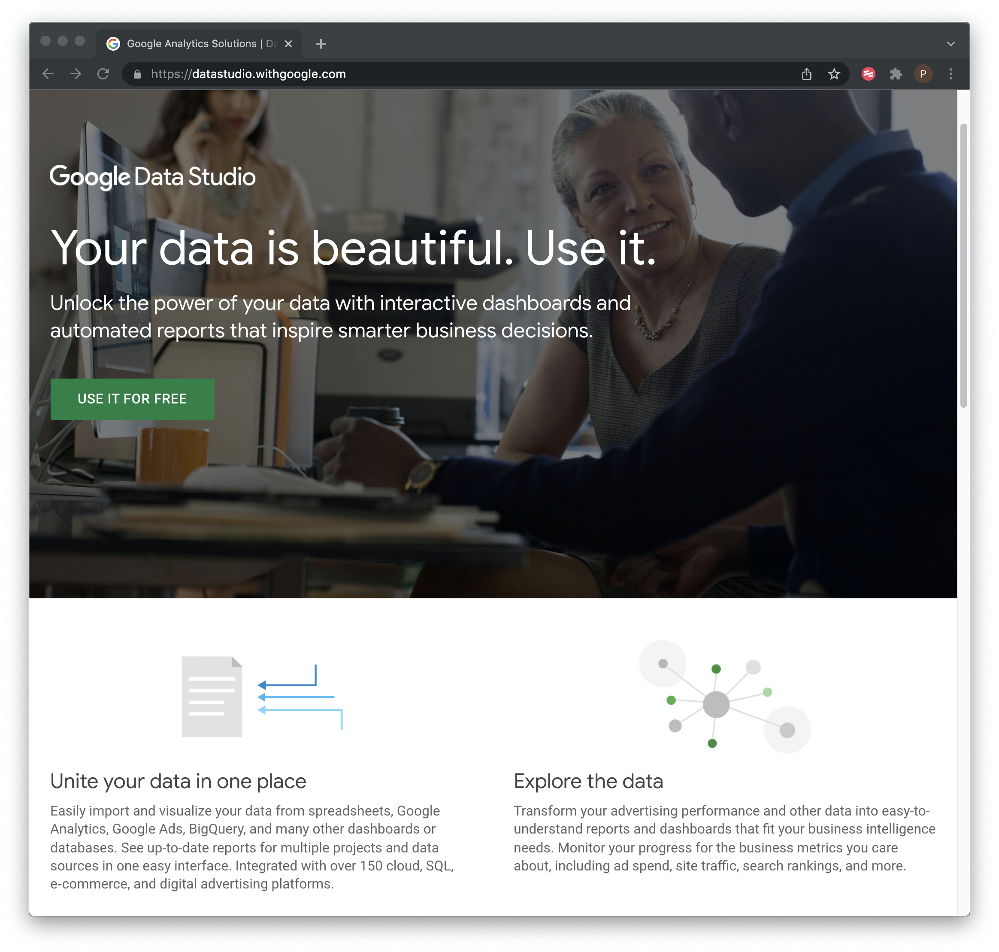
In addition to Google Data Studio it is also worth noting Google Big Query which provides access to large scale datasets and is queryable using SQL and packages in Python with google cloud biquery and R with the bigrquery package. These services will require a google account and in the case of Google Big Query may involve fees when the free credit tier is exhausted.
4.2 Cleaning Tools
4.2.1 Open Refine (formerly Google Refine)
A fundamental rule of data analysis and visualization is: rubbish in = rubbish out. If your data has not been cleaned in the first place, do not be surprised if the results of analysis or visualization are rubbish.
An in depth chapter is available here on the use of Open Refine, formerly Google Refine, for cleaning patent data. For patent analytics Open Refine is an important free tool for cleaning applicant and inventor names. A number of videos are available on the home page to help you get started and we cover the main steps for patent data in the open refine chapter.

A number of platforms provide data cleaning facilities and it is possible to do quite a lot of basic cleaning in either Open Office or Excel. Open Refine is the most accessible tool for timely cleaning of patent name fields. In particular, it is very useful for splitting and cleaning thousands of patent applicant and inventor names.
Open Refine can be used with R with the refinr package and with Python through the open refine client
A number of companies now also offer data cleaning software services. Many of these are paid services and therefore outside the scope of this Manual. However, some such as WinPure have a limited free tier (maximum 20,000 records). A number of blogs offer reviews (which may be sponsored) of these services. When considering the use of freemium services may lead to ‘lock in’ issues that create a dependency on a paid service. It will often be better and more cost effective to spend time learning tools such as Open Refine and acquiring some basic programming language skills rather than being locked in to a closed product.
It is also important to note that some cloud services providers now incorporate data cleaning products into their offerings. An example is Google Data Prep from Trifacta. These services are not free but can be cost effective because they are based on ‘pay as you go’ pricing, payment stops when you shut down the service. Other cloud service providers such as Amazon Web Services (AWS) and Microsoft Azure may offer similar services.
4.3 Data Mining
There are an ever growing number of data mining tools out there. Here are a few of those that have caught our attention with additional tools listed below.
4.3.1 RStudio
RStudio is a very powerful tool for working with data and visualising data using R and Python and then writing about it. The WIPO patent analytics team uses RStudio. For example, the WIPO patent analytics website is created in RStudio and the Manual, Handbook and other resources on the WIPO patent analytics site are all created in RStudio.
While the learning curve with R can be intimidating a great deal of effort goes in to making R accessible through tutorials such as those on DataCamp, webinars, R-Bloggers and Stack Overflow and free university courses such as the well known John Hopkins University R Programming Course on Coursera. Indeed, as with Python, there is so much support for users at different levels that it is hard ever to feel alone when using R and RStudio.

To get started with R download RStudio for your platform by following these instructions and making sure to install R from the link provided.
If you are completely new to R then DataCamp is a good place to start. The free John Hopkins University R Programming Course on Coursera is also very good. The John Hopkins University course is accompanied by the Swirl tutorial package that can be installed using `install.packages(“swirl”) when you have installed R. This is a real asset when getting started.
In developing this Manual we mainly focused on developing resources with R. But, we would emphasise that pretty much any of this could be done with Python and we encourage you to learn either R, Python or both. A great deal of effort is now going into promoting the use of both languages for data science, such as the recent integration of Python into RStudio.
4.3.2 RapidMiner Studio
Comes with a free service and a variety of tiered paid plans. RapidMiner focuses on machine learning, data mining, text mining and analytics.

4.3.3 KNIME
An open platform for data mining.

Other data mining tools (such as WEKA and NLTK and scikitlearn in Python with wrappers in R are covered below). If you would like to explore other data mining software try this article for some ideas.
4.4 Data visualization
If you are new to data visualization we suggest that you might be interested in the work of Edward Tufte at Yale University and his famous book The Visual Display of Quantitative Information. His critique of the uses and abuses of Powerpoint is also entertaining and insightful. The work of Stephen Few, such as Show Me the Numbers: Designing Tables and Graps to Enlighten is also popular.
Remember that data visualization is first and foremost about communication with an audience. That involves choices about how to communicate and finding ways to communicate clearly. In very many cases the outcome of patent analysis and visualization will be a report and a presentation. Tufte’s critique of powerpoint presentations should be required reading for presenters. You may also like to take a look at Nancy Duarte’s Resonate for ideas on polishing up presentations and storytelling. The style may not suit everyone but Resonate contains very useful messages and insights. In an offline environment, consider Katy Borner’s Atlas of Science: Visualising What We Know as an excellent guide to the history of visualizations of scientific activity including pioneering visualizations of patent activity. Bear in mind that effective visualization takes practice and is a quite well trodden path.
There are a lot of choices out there for data visualization tools and the number of tools is growing rapidly. For business analytics Gartner provides a useful (but subscription based) Magic Quadrant for Business Intelligence and Analytics report that seeks to map out the leaders in the field. These types of reports can be useful for spotting up and coming companies and checking if there is a free version of the software (other than a short free trial).
We would suggest thinking carefully about your needs and the learning curve involved. For example, if you have limited programming knowledge (or no time or desire to learn) choose a tool that will largely do the job for you. If you already have experience with javascript, Java, R or Python, or similar, then choose a tool that you feel most comfortable with. In particular, keep an eye out for tools with an API (application programming interface) in a variety of language flavours (such as Python or R) that are likely to meet your needs.
If you are completely new to data visualization Tableau Public and our Tableau walk through chapter are a good place to learn without knowing anything about programming. Some other tools in this list are similar to Tableau Public (in part because Tableau is the market leader). We will also provide some pointers to visualization overview sites at the end of this section where you can find out about what is new and interesting in data visualization.
4.4.1 Google Charts
- Create a Google Account to Access Google Spreadsheets and other Google programmes
- Take a look at the Google Charts Gallery and API
- For an overview of using Google Charts in R then see the
GoogleVispackage and its examples here - For an overview using Google Charts with Python see the google-chartwrapper or Python Google Charts
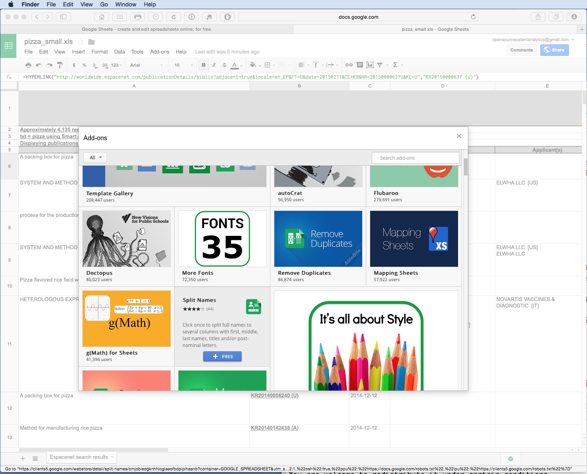
4.4.2 Tableau Public
An in depth chapter on getting started with patent analysis and visualization using Tableau Public is available here. When your patent data has been cleaned, Tableau Public is a powerful way of developing interactive dashboards and maps with your data and combining it with other data sources. Bear in mind that Tableau Public data is, by definition, public and it should not be used with sensitive data.
knitr::include_graphics("images/tableau/dashboard_completed.png")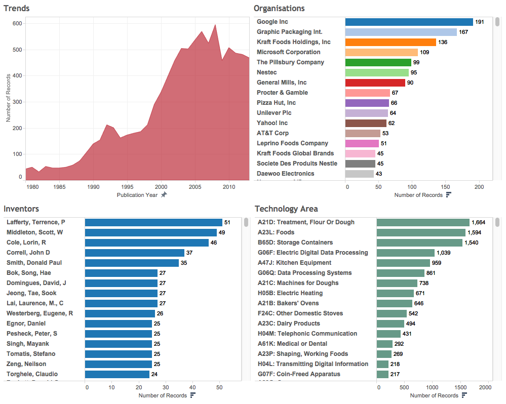
The workbook can be viewed online here.
4.4.3 R and RStudio
R is a statistical programming language for working with all kinds of different types of data. It also has powerful visualization tools including packages that provide an interface with Google Charts, Plotly and others. If you are interested in using R then we suggest using RStudio which can be downloaded here. The entire WIPO Open Source Patent Analytics Manual was written in RStudio using Rmarkdown to output the articles for the web, .pdf and presentations. As this suggests, it is not simply about data visualization. To get started with R and RStudio try the free tutorials at DataCamp. We will cover R in more detail in other chapters and online articles.
As part of an approach described as The Grammar of Graphics, inspired by Leland Wilkinson’s work, developers at RStudio and others have created packages that provide very useful ways to visualise and map data. The links below will take you to the documentation for some of the most popular data visualization packages.
We will cover ggplot2 and ggvis in greater depth in future chapters. Until then, to get started search for articles on ggplot2 and ggvis on R-Bloggers . Datacamp offers a free tutorial on the use of ggvis that can be accessed here. For a wider overview of some of the top R packages see Qin Wenfeng’s popular awesome R list.
4.4.4 Shiny
Shiny from RStudio is a web application framework for R. What that means is that you can output tables and visual data from R such as those from the tools mentioned above to the web.

Shiny apps for R users allows for the creation of online interactive apps (upto 5 for free). See the Gallery for examples. Search R Bloggers for Shiny examples and tutorials.
Radiant is a browser based platform for business analytics in R. It is based on Shiny (above) but is specifically business focused.

For a series of starter videos on Radiant see here.
4.4.5 Other visualization Tools
- d3.js is the javascript library that launched a thousand data visualisations.
- Tulip: data visualization framework in C++
- SigmaJS: JavaScript library dedicated to graph drawing. It allows the creation of interactive static and dynamic graphs. Look out for packages in R such as sigmajs and Python.
- Kendo UI: Create widgets for responsive visualizations.
- Timeline: A KnightLab (northwestern university) is a tool allowing for the creation of interactive timelines and is available in 40 languages.
- Sci2: A toolset for studying science.
- Simile Widgets Web widgets for storytelling as a spin off from the SIMILE Project at MIT.
- jqPlot. An open source jQuery based Plotting Plugin.
For additional visualization tools and ideas see the excellent Flowing Data and Open Data Tools.
4.5 Network Visualization
Network visualization software is an important tool for visualising actors in a field of science and technology and, in particular, the relationships between them. For patent analysis it can be used for a range of purposes including:
- Visualising networks of applicants and inventors in a particular field or scientific researchers. An example of this type of work for synthetic biology is here for a network of approximately 2,000 authors of articles on synthetic biology.
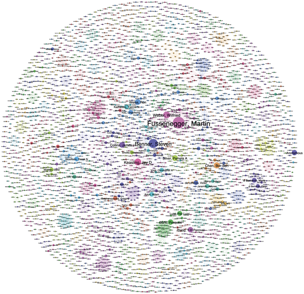
- Visualising areas of technology and their relationships using the International Patent Classification and the Cooperative Patent Classification (CPC). Previous work at WIPO pioneered the use of large scale patent network analysis to identify the patent landscape for animal genetic resources.
The image below displays a network map of Cooperative Patent Classification Codes and International Patent Classification codes for 10s of thousands of patent documents that contain references to a range of farm animals (cows, pigs, sheep etc.). The dots are CPC/IPC codes describing areas of technology. The clusters show tightly linked documents that share the same codes that can then be described as ‘modules’ or clusters. The authors of the landscape report on animal genetic resources used this network as an exploratory tool to extract and examine the documents in the cluster for relevance. Distant clusters, such as Cooking equipment and Animal Husbandry (housing of animals etc.), were discarded. The authors later used network mapping to explore and classify the individual clusters.
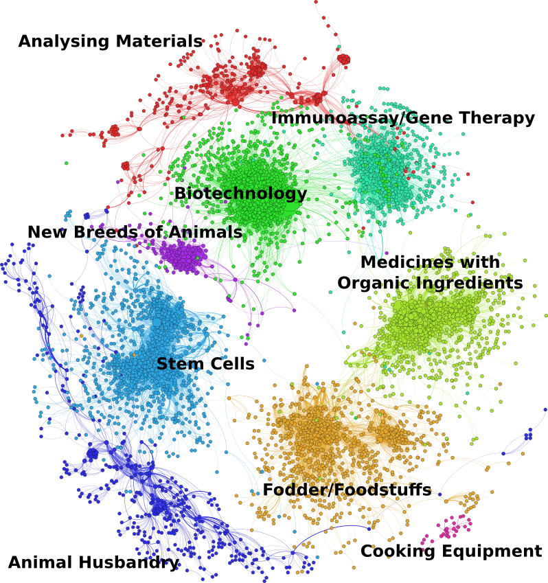
- Visualising networks of key terms in patent documents and their relationships with other terms as part of the exploration and refinement of analysis. In this case the authors have clustered similar terms onto each other using word stemming to understand the contents of the new breeds of animals cluster above in relation to animal breeding. 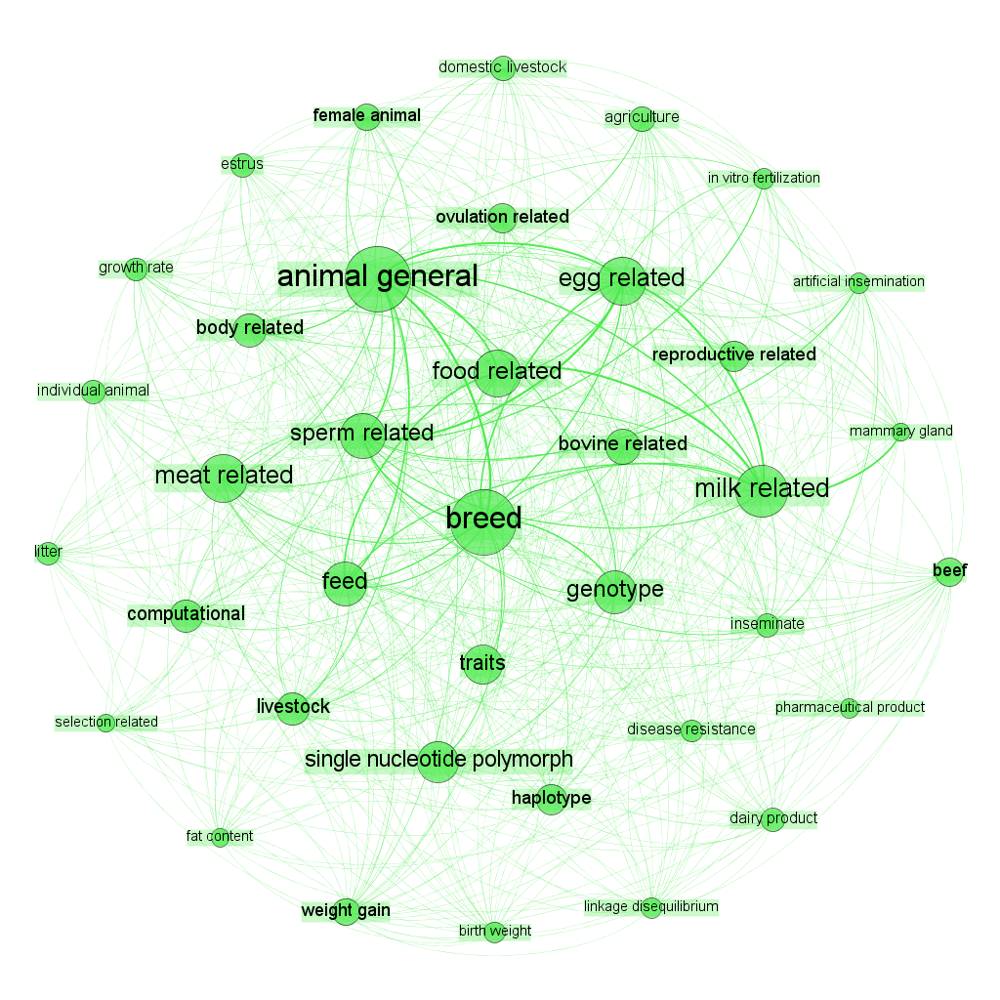
As such, network visualization can be seen as both an exploratory tool for defining the object of interest and as the end result (e.g. a defined network of actors in a specific area).
4.5.1 Gephi
Gephi is Java based open source network generating software. It can cope with large datasets (depending on your computer) to produce powerful visualizations.

One issue that may be encountered, particularly by Mac users, is problems with installing the right Java version. This problem appears to have been solved with the latest release Version 0.9.
To create .gexf network files in R try the rgexf package and example code. In Python try the pygexf library and for anything else such as Java, Javascript C++ and Perl see gexf.net.
4.5.2 NodeXL
For die hard Excel users, NodeXL is a plug in that can be used to visualise networks. It works well.
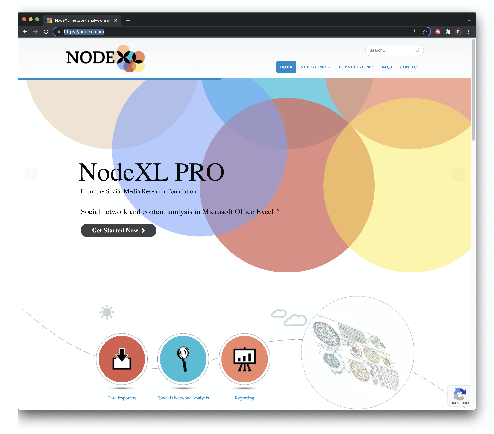 ### Cytoscape
Cytoscape is another network visualization programme. It was originally designed for the visualization of biological networks and interactions but, as with so many other bioinformatics tools, can be applied to a wider range of visualization tasks.
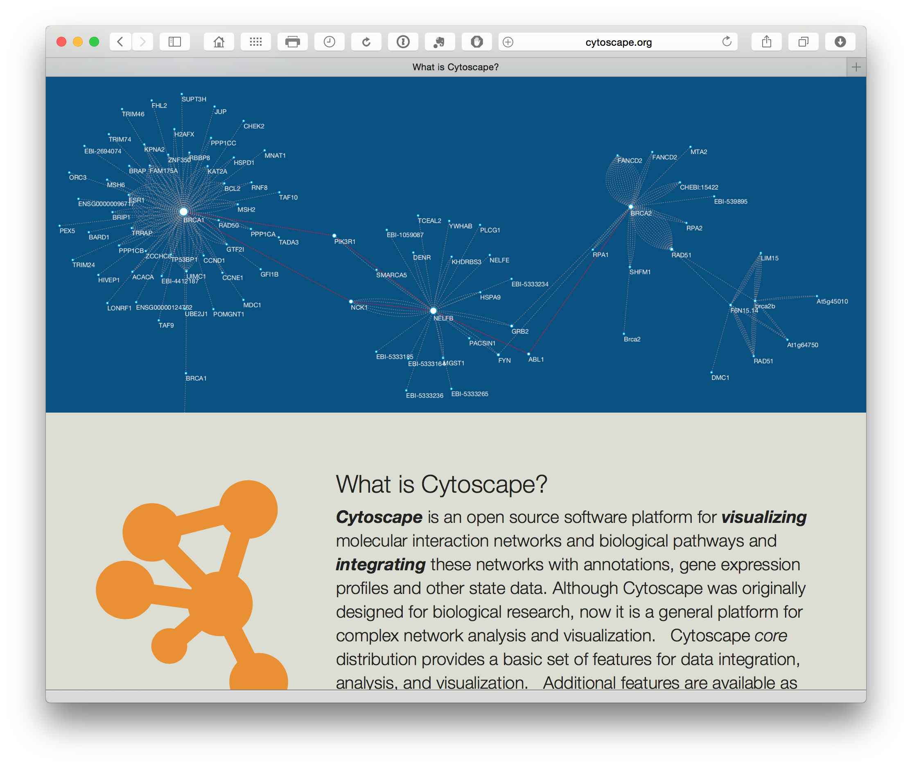
We mainly have experience with using Gephi (above) but Cytoscape is well worth exploring. Cytoscape works with Windows, Mac and Linux.
4.5.3 Pajek
This is one of the oldest and most established of the free network tools and is Windows only (or run via a Virtual Machine). It is widely used in bibliometrics and can handle large datasets. It is a matter of personal preference but tools such as Gephi may be superseding Pajek because they are more flexible. However, Pajek may possibly have an edge in precision, ease of reproducibility and the important ability to easily save work that Gephi can lack as a Beta programme.

Data can also be exported from Pajek to Gephi for those who prefer the look and feel of Gephi.
4.5.4 VOS Viewer
VOS Viewer from Leiden University is similar to Gephi and Cytoscape but also presents different types of landscape (as opposed to pure network node and edge visuals). The latest version can also speak to both Gephi and Cytoscape. It is worth testing for different visual display options and its ability to handle Web of Science and Scopus bibliographic data.
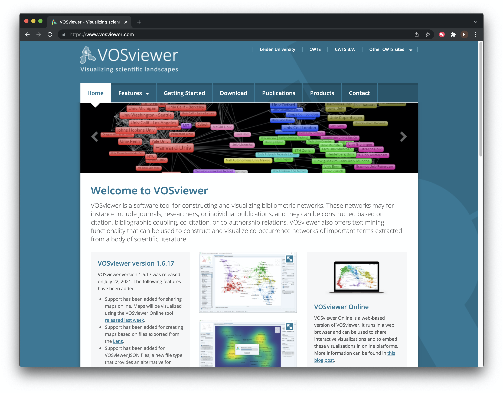
4.5.5 Hive Plots
We are not entirely sure what to make of Hive Plots. However, we have a lot of sympathy with the aims. The aim of network visualization should be to clarify the complex… not “wow, look, I made something that looks like spaghetti” (although that is normally part of the process). So, we find Hive Plots developed by Martin Krzywinski at the Genome Sciences Center at the BC Cancer Agency interesting.
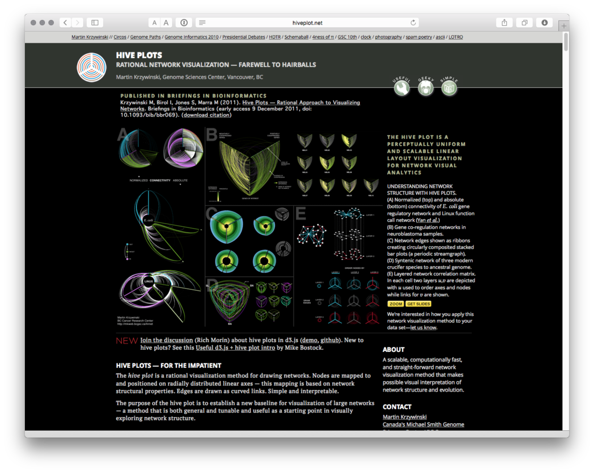
Designed for large networks there are packages for Hive plots in Python through pyveplot and hiveplot. For R there is HiveR with documentation available on CRAN here.
In closing this discussion of network mapping tools it is also important to note that network visualizations need to be exported as images. This means that there are additional requirements for image handling software. Open source tools such as The GNU Image Manipulation Program or GIMP are perfectly adequate and easy to use for image handling. Where using labels particular attention should be paid to outlining the text to ensure consistency of display across different computers. These kinds of tasks can be performed in tools such as GIMP.
For other sources of network visualization see FlowingData. Also try Visual Complexity and visualising data for sources of inspiration.
We cannot leave this topic without mentioning the R Graph Gallery and the Python Graph Gallery. These sites provide you with access to a wide range of different example visualisations in R or Python with working code that you can experiment with. This should often be a first port of call when looking to improve visualisation skills or seeking new ideas.
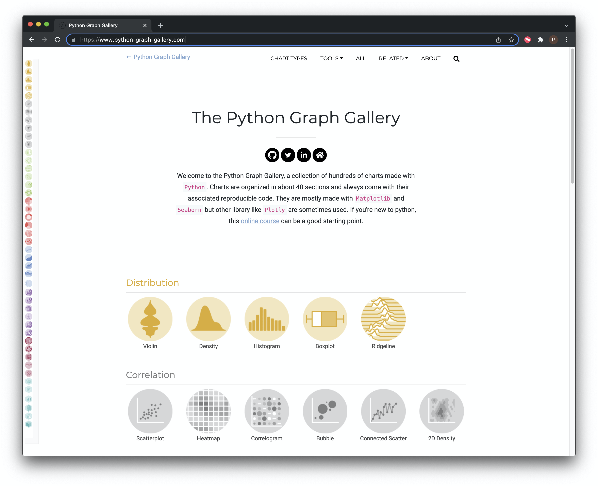
4.6 Infographics
Infographics are increasingly part of the communication toolkit. They are particularly useful for communicating the results of research in an easily digestible yet informative form. The WIPO Patent Landscape Project has developed a range of infographics with the latest being for the Animal Genetic Resoutces Patent Landscape Report and Assistive Devices and Technologies. The WIPO Technology Trends 2019: Artificial Intelligence report may also provide some ideas on visual presentation.
The growing popularity of infographics has witnessed the rise of a range of online services including free services. In more cases these will have limitations such as the number of icons etc. that can be used in a graphic. However, as a growing sector that may change. Here are a few services with free options that may be worth exploring.
- Piktochart.com
- Canva.com
- Infogr.am
- Visme
- Easel.ly
- Genia.ly
- Venngage
- Snappa
- Mind the Graph for science graphics
- Kartograph for Pythonistas
Websites such as Cool Infographics can be really useful for finding additional sources, exploring what is hot in the infographics world, tutorials and informative disasters to avoid. Tools such as Apple Keynote, Open Office Presentation or Powerpoint can be very useful for wire framing (sketching out) infographics to see what works.
4.7 Geographical Mapping
In addition to the ubiquitous Google Maps or well known Google Earth we think it is well worth taking a close look at other services.
4.7.2 Leaflet
A very popular Open Source JavaScript library for interactive maps
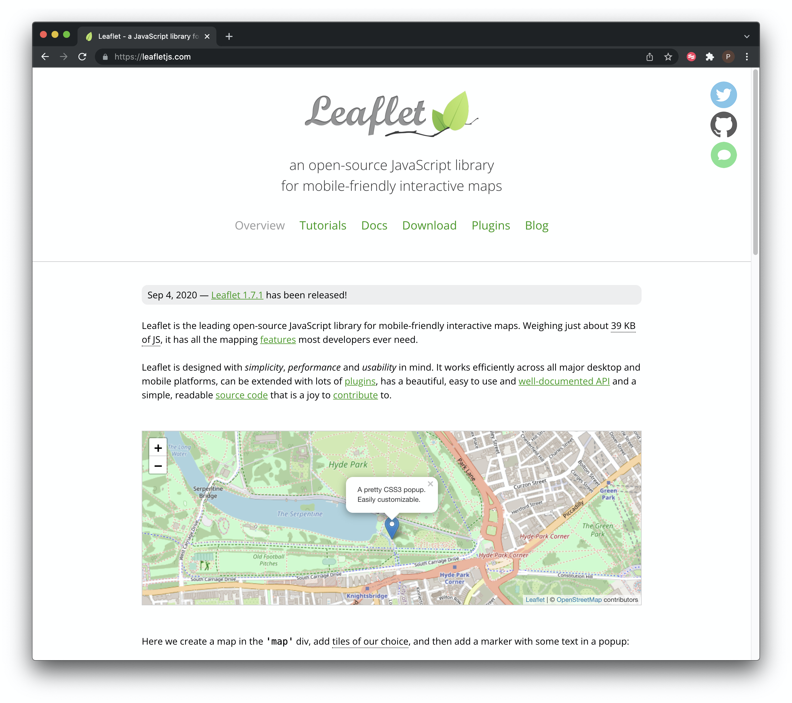
Accessible through an API. R users could use the leafletr package with tutorials and walk throughs available at R-bloggers. For Python users try folium here or here.
4.7.3 Tableau Public
Already mentioned above. Tableau Public uses Open Street Map to create a powerful combination of interactive graphs that can be linked to maps geocoded at various levels of detail. See an example here for the scientific literature on synthetic biology.
Tableau Public is probably the easiest way to get started with creating your own maps with patent data. The map below was produced using custom geocoding and connecting the data to publication country and the titles of scientific publications.
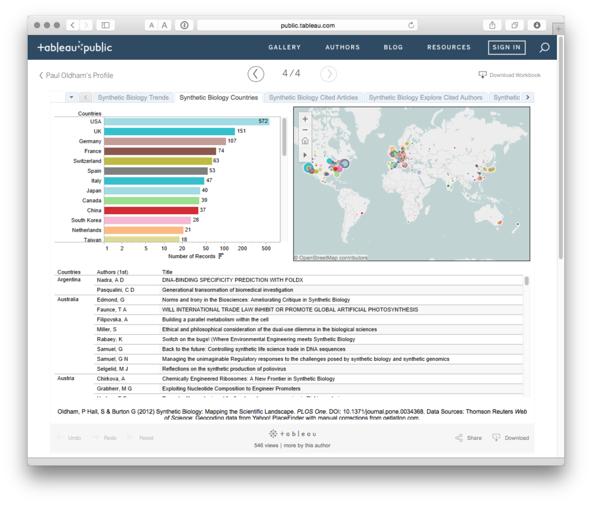
To view the interactive version try this page. It is possible to easily create simple yet effective maps in Tableau Public.
4.7.4 QGIS
A very popular and sophisticated software package running on all major platforms.
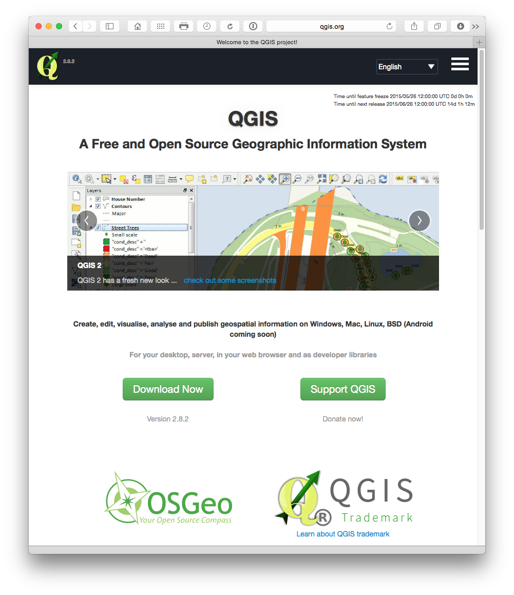
Using QGIS Oldham and Hall et al mapped the worldwide geographical locations of marine scientific research and patent documents making reference to deep sea locations such as hydrothermal vents (see Valuing the Deep). This is a low resolution QGIS map of scientific research locations in the oceans based on text mining of the scientific literature.
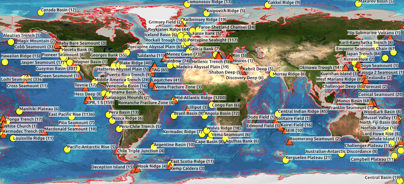
4.7.5 Geonames.org.
Not a mapping programme, instead geonames is an incredibly useful database of georeferenced place names from around the world along with a RESTful web service. If you need to obtain the georeferenced data for a large number of places then this should be your first stop. geonames can be accessed in R using the geonames along with client libraries for Python, Ruby, PHP and others.
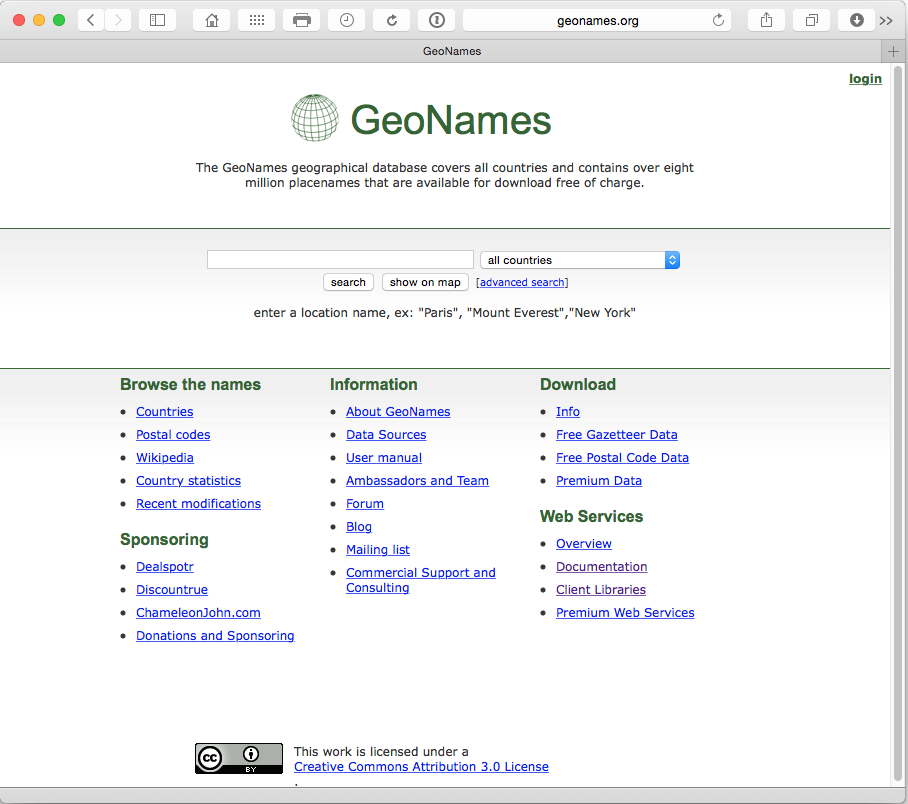 ### OpenLayers
OpenLayers allows you to add your own layers to OpenStreetMap and other data sources and may come in very useful if you are seeking to create your own layers. It also has an API and tutorials.
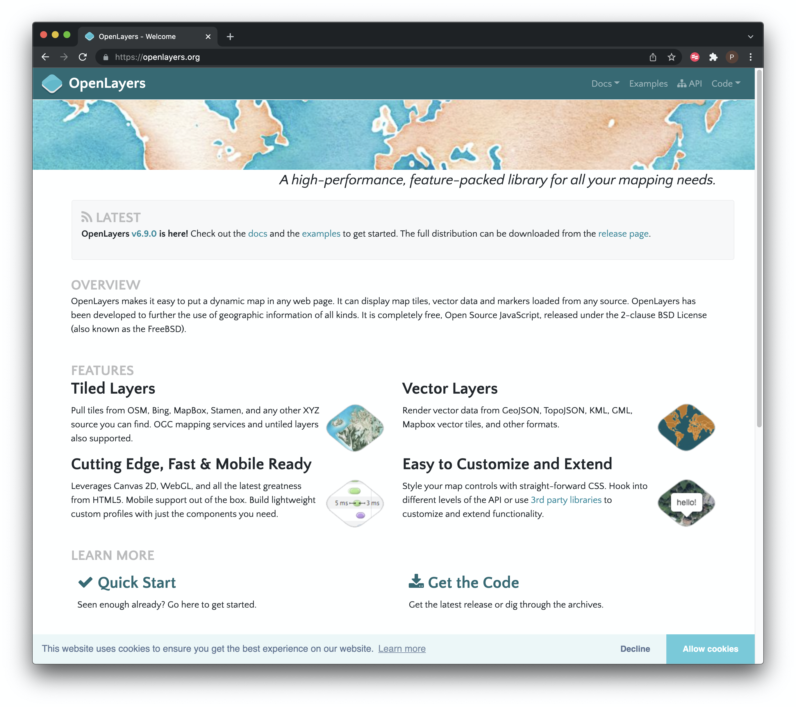
4.7.6 CartoDB
Free and paid accounts. While increasingly corporate in presentation the use cases may assist you with deciding on whether you want to go any further. For developers there is extensive documentation of the tools and API.
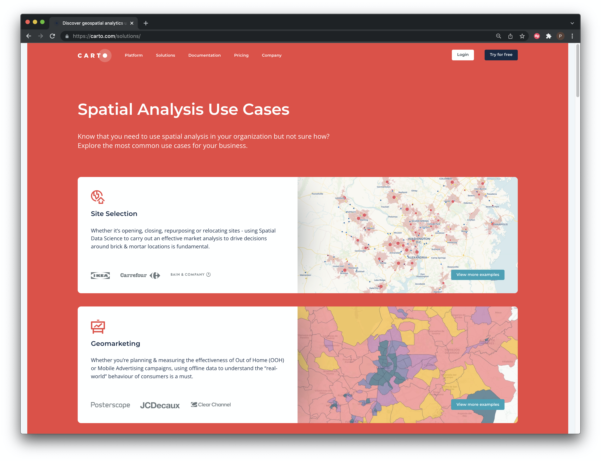 ### d3.js
A javascript library for manipulating data and documents. This is the library behind some of the other frequently mentioned visualization tools on the web.

4.7.8 Datawrapper
An entirely open source service for creating charts and maps with your data. Widely used by big newspapers and so the graphics will seem familiar. Either create an account or fork the source from Github here. There is a free option and a set of pricing plans.

4.7.9 Plotly
Plotly offers paid (e.g Dash Enterprise) and free services with with clients for R, Python, Matlab, Node.js and Excel. R users are very well served by an excellent free electronic book by Carson Sievert (2019) Interactive web-based data visualization with R, plotly, and shiny. Plotly’s ease of use and access from a range of environments are big reasons for its growing success.
As it can be a little confusing to get past the commercial product (Dash Enterprise) we provide the links to the documentation for the free library access at https://plotly.com/graphing-libraries/.
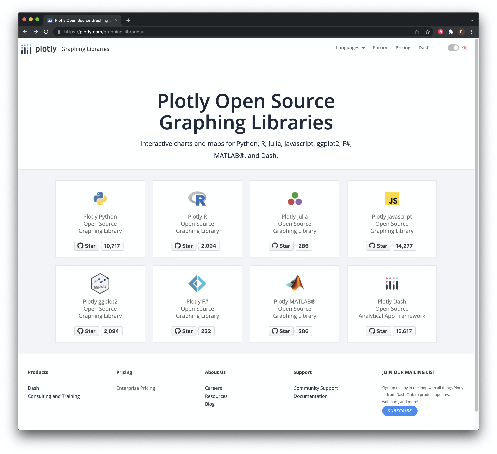
4.8 Text Mining
There are a lot of text mining tools out there and many of them are free or open source. Here are some that we have come across.
4.8.1 Tidytext
We use the tidytext R package from Julia Silge and David Robinson aall the time in our day to day work as it takes a lot of complexity out of practical text mining tasks and the electronic book can be accessed free of charge (we also bought a copy).
If working with tidytext we also recommend Tyler Rinker’s excellent textclean R package to easily clean up your data before processing.
4.8.3 NLTK
NTLK appears to be the leading package (apart from spaCy) in Python and covers almost all major needs. The accompanying book Natural Language Processing with Python may also be worth considering. The Python Textmining Package is simpler than the giant NTLK package but may suit your needs.
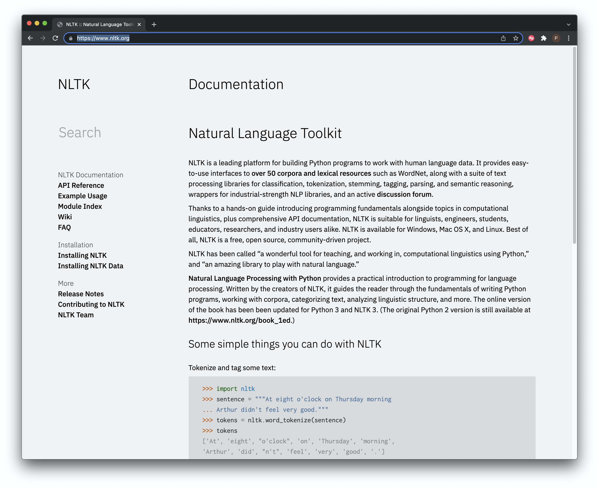 ## Sci_lit learn
Sci-kit learn is a general purpose machine learning library but there is detailed documentation on working with text including practice datasets.
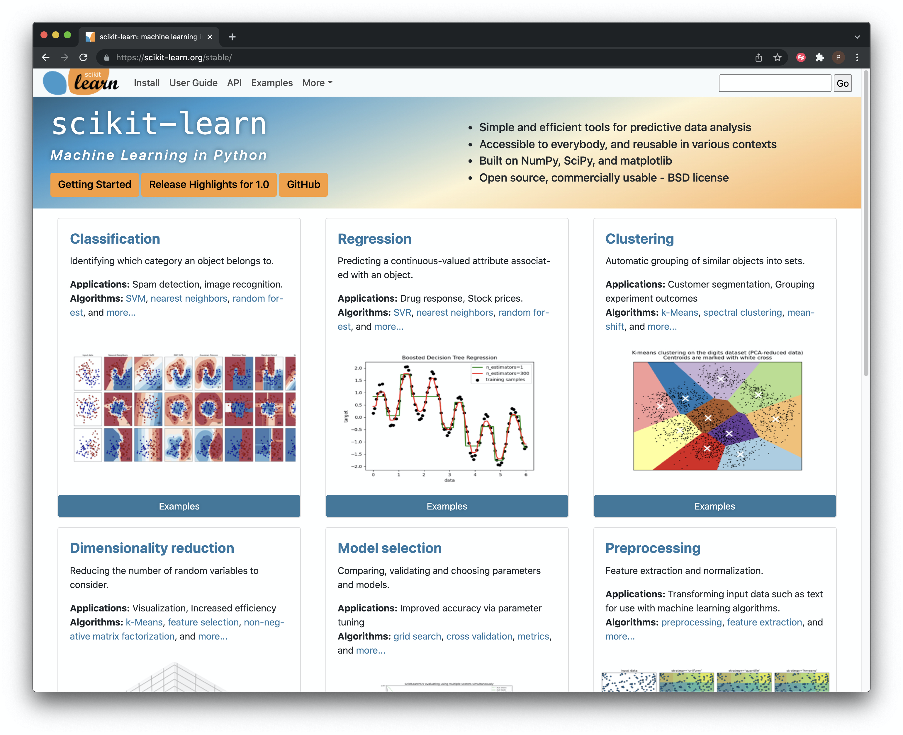
4.8.4 Spacy
spaCy is a free machine learning package for Natural Language Processing that has become very popular because it focuses on creating machine learning models that are ready to be put into production rather than academic exploration. spaCy is a really important contribution in advancing natural language processing and making it accessible to everyone. We recommend the excellent free tutorial by Ines Montani (co-founder and developer of spaCy).
If you are trying to think of a good reason to learn some Python, spaCy is it.
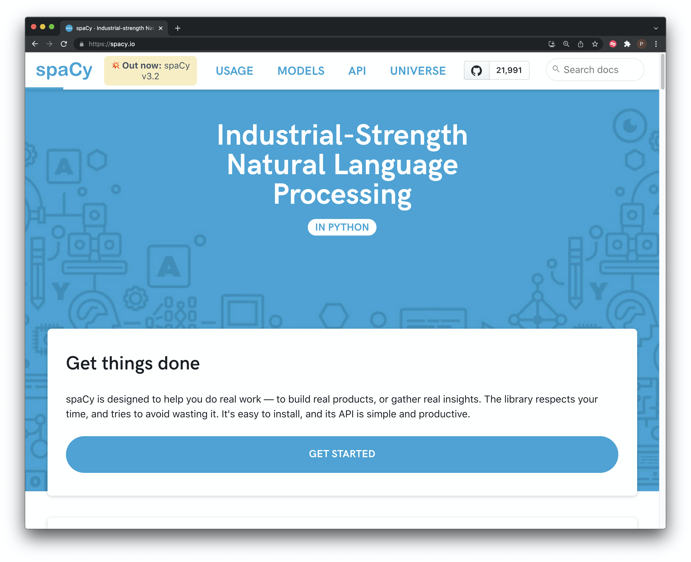 If you are already an R user, or just R curious, the spacyr package by Kenneth Benoit and Akitaka Matsuo at the London School of Economics, is a great choice and well documented.
4.8.5 Annotation Tools for Machine Learning
When working with machine learning for texts or images you will normally need to annotate some texts ot images in order to train a model. There are a growing number of tools out there including the paid Prodigy from explosion.ai (the creators of spaCy) which we discuss in the WIPO Handbook on Patent Analytics. You might want to try the following free tools:
4.8.6 Word Trees
Word trees can be used for detailed investigation of texts such as claims trees. The first two examples are taken from the WIPO Guidelines for Preparing Patent Landscape Reports.
4.8.7 Google Word Trees on the Google Developers site provides instructions for generating word trees using Javascript.
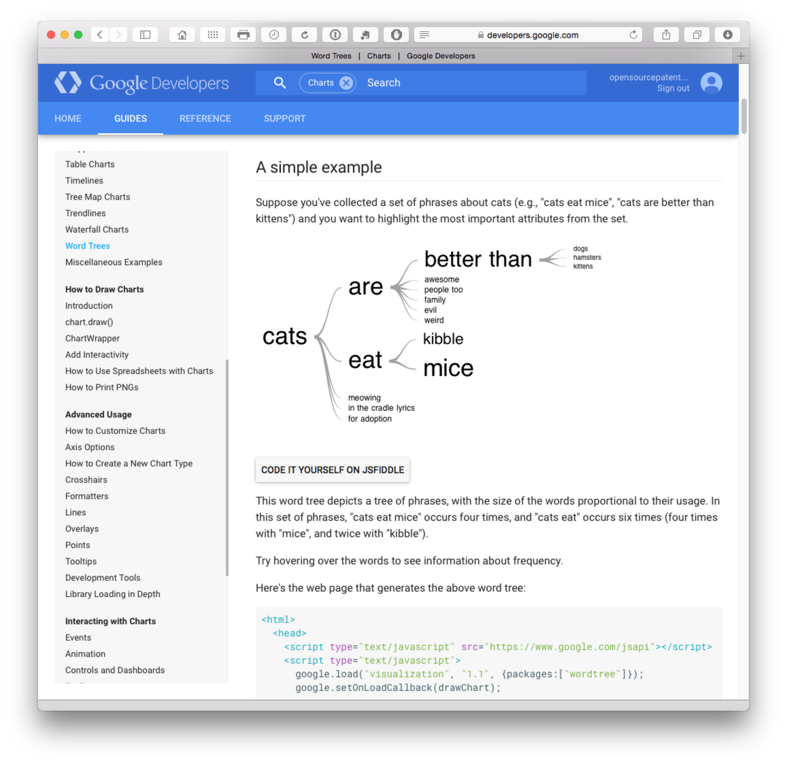
and Jason Davies tree creator.
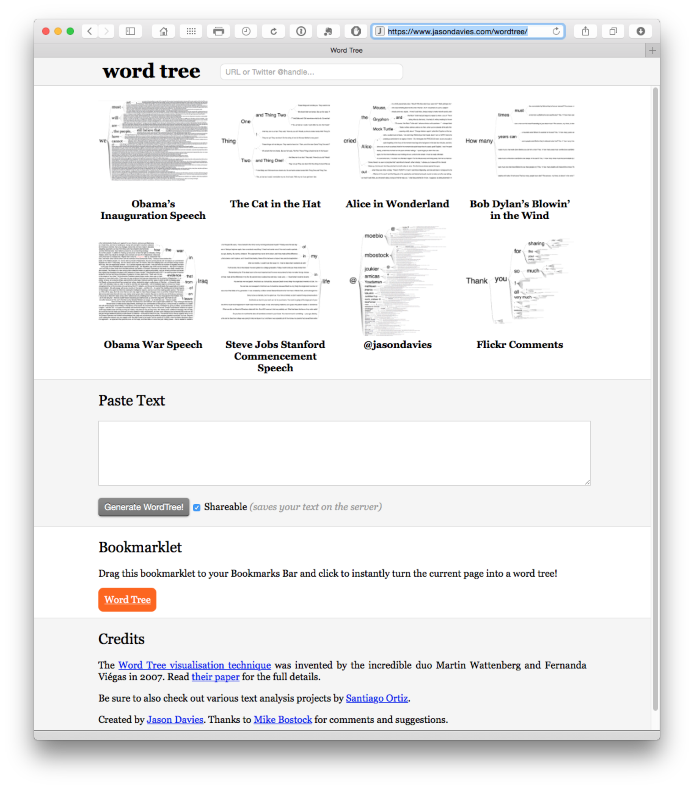
4.8.8 R and the tm package
The tm package in R (e.g. using RStudio) provides access to a range of text mining tools. For an introduction from the package developers see here. A number of very useful tutorials are also available for text mining on R-bloggers. For a step by step approach see Graham Williams (2014) Hands-On Data Science with R Text Mining.
For a recent overview of text mining tools in R see Fridolin Wild’s (2021) CRAN Task View: Natural Language Processing listing the various packages and their uses.
Note that many text mining packages in general focus on generating words. For non-academic purposes this is not very useful. Patent analysis will typically focus on extracting and analysing phrases (ngrams). Therefore look for tools that will extract phrases and allow them to be interrogated in depth. For example, the author of this Chapter (Paul Oldham) normally uses tidytext, spaCy (in Python) and spacyr.
4.8.9 Python and Text Mining
There are quite a few resources available on text mining using Python. Note that Python may well be ahead of R in terms of text mining resources (until we are proven wrong). However, note that Python and R are increasingly used together to exploit their different strengths. Here are a few resources to help you get started.
4.8.10 Other text mining resources
For a wider range of text mining options see this predictive analytics article on the top 20 free text mining software tools.
For other free text mining tools try some of the corpus linguistics websites such as The Linguist List, this list, or this list. Bear in mind that most of these tools are designed with linguists in mind and quite a number may be showing their age. However, even simple concordancing tools, such as AntConc can play an important role in filtering large numbers of documents to extract useful information.
Some analysis tools such as VantagePoint from Search Technology Inc. have been especially developed and adapted for processing patent data and are available in a subsidised version for students from the vpinstitute. There are also a number of qualitative data analysis software tools that can be applied to patent analysis such as MAXQDA, NVivo, Atlas TI and QDA Miner. However, with the exception of QDA Miner Lite (Windows only), while they offer free trials they do not fall into the category of free or open source software that is our focus.
4.9 Round Up
In this chapter we have covered some of the major free and open source tools that are available for patent analysis. These are not patent specific tools but can be readily adapted to patent analysis. With the exception of cleaning of patent applicant and inventor names and concatenated fields, patent data is very well suited for visualization and network mapping. The availability of country level data, address fields and place names in texts also means that patent data can be readily used for geographical mapping.
In practice, it is important to identify a set of tools that work best for you and the type of patent analysis tasks that work best for you.
It is also important to emphasise that in practice you may use a mixture of paid for tools and free tools. For example, the recent WIPO Patent Landscape for Animal Genetic Resources involved the use of GNU Parallel and Map Reduce for large scale text mining of 11 million whole text patents using pattern matching in Ruby, combined with the use of PATSTAT for statistics, Thomson Innovation and VantagePoint for validation, and Tableau and Gephi for visualization. In short, it is possible to perform almost all patent analysis tasks, using free tools, but in practice a mixed ecosystem of open source and commercial tools may produce the best workflow for the tasks you perform. As such, it is important to think about the tools that are needed and where they support and strengthen existing analysis workflows.
4.10 The Checklist
If moving into open source software for the first time it may be useful to develop a list of basic questions to assess whether they a tool or a set of tools will meet your particular needs. The following list is not meant to be definitive or exhaustive but aims to encourage thinking about your particular requirements.
Does this tool make sense? That is, is it immediately clear what the purpose of a tool is? If the answer is yes, this is a good sign. If the answer is no, the tool may be too specialised for your particular needs or the creators may be struggling with clearly expressing what the tool is trying to do (a bad sign).
Do you understand the language the tool is written in? Is it a problem if you don’t (see below)? Is it worth training someone in this language? Are there free or affordable courses available?
Is the source code open or proprietary and what are the terms and conditions of the open source licence? When using open source or free software it is important to be clear what the precise provisions of the licence mean. For example, are you required to make any modifications to the source code available to others on exactly the same terms as the original licence? If you are working with source code this is an important IP question. If you are not working at the source code level this may not be an issue, but it always always makes sense to understand the open source licence.
Who owns the data? If you upload data to a web based service, who owns the data once it is uploaded and who else may have access to it and under what conditions? These questions are particularly pertinent where the data is commercially relevant.
What does free actually mean? Free versions are often a lead in to premium services (hence the term
freemium). This transition is a key feature of open source business models. In some cases free may be highly restricted in terms of the amount of data that can be processed, saved or exported. In other cases, no restrictions on use of the tool are imposed. However, knowledge about the use of the tool may be the real premium or cost factor, particularly if you come to depend on that tool. Be prepared for this.What other companies (or patent offices) are using this tool? This can be an indicator of confidence and also provides examples of concrete use cases.
Is the tool well supported with documentation and tutorials? This is an indicator of maturity and ‘buy in’ by a community of developers and users.
How large is the community of users and are they active in creating forums and blogs etc. to support the wider community of users?
Is this a one function tool or a multi-purpose tool? That is, will this tool cover almost all needs or is it a specific
good to havecomponent in a toolkit. In some cases a tool that does one thing very well is a real asset where other tools fall down because they try to do too many things and do them badly. Of the tools listed above, R and Python (possibly in combination) come closest to tools that could be used for a complete patent analysis workflow from data acquisition right through to visualization. In practice, most patent analysis tool kits will consist of both general and specific tools.Can I break this tool? It is always a very good idea to work out where the limitations of software lie so that you are not taken by surprise later when trying to do something that is mission critical. In particular, software may claim to perform particular tasks, such as handling thousands or millions of records, but do them very badly, if at all. By pushing a tool past its limits it is possible to determine where the limits are and how to get the best out of it.
Is the tool proportionate to my needs? There has recently been a great deal of excitement about
Big Dataand the use of Hadoop for dealing with large volumes of data using distributed computing. While Hadoop is open source, so anyone can use it, its adoption would generally be disproportionate for the needs of most patent analysis except where dealing with almost the entire corpus of global patent documents, large volumes of literature and considerable quantities of scientific data. By way of illustration, as noted above, the WIPO Animal Genetic Resources Landscape report used GNU Parallel to process 11 million patent records. The decision to use GNU Parallel was partly made on the basis that Hadoop would have been complicated to implement and overkill for the particular use case. In short, it is worth carefully considering whether a tool is both appropriate and proportionate to the task at hand.Finally, the golden rule for adopting any tool for patent analysis can be expressed in very simple terms. Does this work for me?
If you have any suggestions for free or open source tools that we should include in the manual please feel welcome to add a comment to the electronic version of this chapter.
4.11 Credits
The development of the list of open source tools benefited from the following articles.